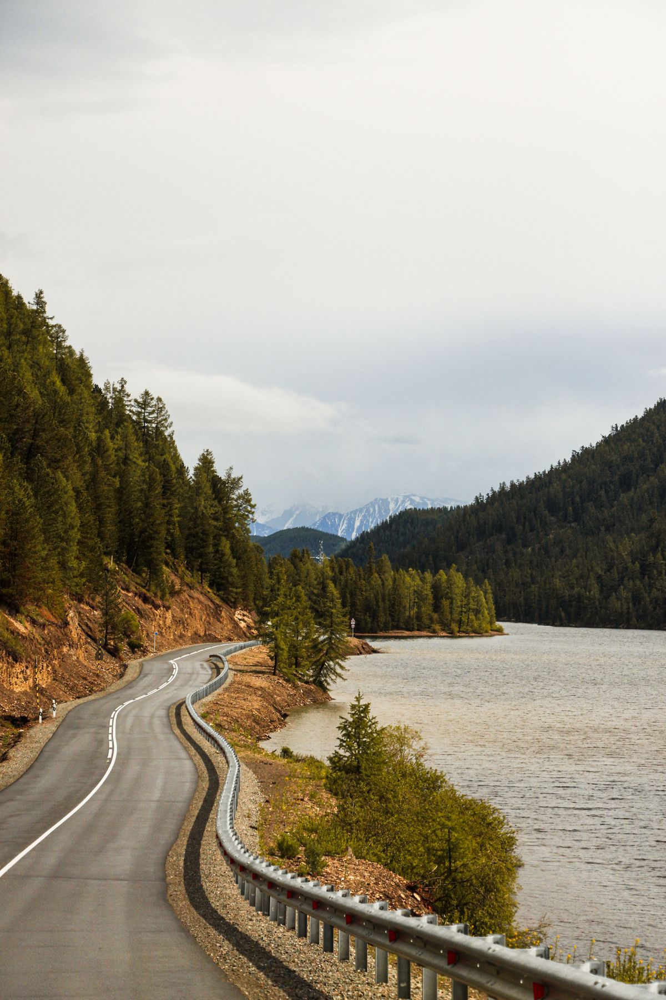

Исследование территории
Как изучить регион до поездки и найти в нём людей, о которых стоит рассказать.
Методика проекта построена так, чтобы качественное интервью мог провести человек без журналистского образования. Мы обучаем ей молодых авторов, а затем едем вместе с ними в регионы.

Вы заполняете анкету и рассказываете о себе, своём регионе и о том, каких героев видите в будущем выпуске.
Мы читаем заявки и приглашаем на короткий разговор. Готовиться к нему не нужно, портфолио тоже не требуется.
Шесть модулей и финальная работа: интервью с героем или обработка материалов. Наставники — опытные авторы «Друг.Медиа».
После защиты работы вы получаете доступ к экспедиции в команде проекта и вступаете в сообщество авторов.
Содержание курса — это методика, по которой работает редакция. Всё изучается с нуля, предварительной подготовки не требуется.
Как изучить регион до поездки и найти в нём людей, о которых стоит рассказать.
Маршрут, договорённости с героями, распределение ролей в команде и план съёмочного дня.
Банк вопросов и сценарий разговора. Как построить беседу так, чтобы человек рассказывал, а не отвечал.
Документальная фотография и видео по методике проекта, без постановки и туристической оптики.
Как собрать материал в историю с композицией и подготовить его для медиаархива.
Как показать готовый материал аудитории и рассказать о герое на встрече или показе.
Не посещение музея, а способ глубокого знакомства с человеком в интересующей вас сфере.
Прямые знакомства с людьми, которые делают своё дело в вашем регионе.
Понимание путей развития в регионе и слабых мест интересующей вас индустрии.
Собранный вами материал выходит в цифровом выпуске и в печатном зине.
Сейчас мы формируем банк участников на следующий год. Если вы обучаетесь на 1–3 курсе бакалавриата или 1 курсе магистратуры — вы можете податься на участие в экспедиции. Финалистам будет доступен курс с сопровождением наставников. Итоги отбора будут доступны 05.2027.
Следить за экспедицией
О новых наборах мы сообщаем в Telegram-канале.